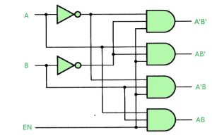
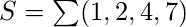
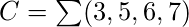
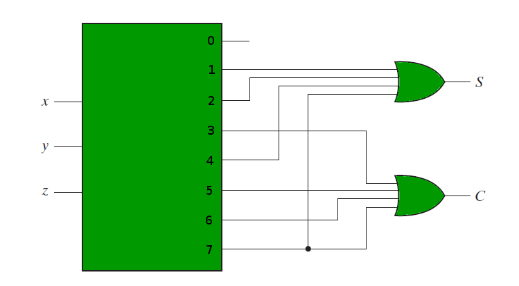

Prerequisite- Binary Decoder, Multiplexers
A Decoder is a combinational circuit that converts binary information from  input lines to
input lines to  unique output lines. Apart from the Input lines, a decoder may also have an Enable input line.
unique output lines. Apart from the Input lines, a decoder may also have an Enable input line.
Decoder as a De-Multiplexer –
A Decoder with Enable input can function as a demultiplexer. A demultiplexer is a circuit that receives information from a single line and directs it to one of possible output lines.
A demultiplexor receives as input, selection lines and one Input line. These selection lines are used to select one output line out of possible lines. To implement a demultiplexor, we use a  decoder with Enable input. The selection lines of the demultiplexer are the input lines that the decoder gets and the one input line of demulitplexer is the Enable input of the Decoder.
decoder with Enable input. The selection lines of the demultiplexer are the input lines that the decoder gets and the one input line of demulitplexer is the Enable input of the Decoder.
Making 1:4 demultiplexer using 2:4 Decoder with Enable input. Let A, B be the selection lines and EN be the input line for the demultiplexer.
The decoder shown below functions as a 1:4 demultiplexer when EN is taken as a data input line and A and B are taken as the selection inputs. The single input variable E has a path to all four outputs, but the input information is directed to only one of the output lines, as specified by the binary combination of the two selection lines A and B. This can be verified from the truth table of the circuit.

Truth Table-

Combinational Logic Implementation using Decoder –
A decoder takes input lines and has output lines. These output lines can provide the minterms of input variables.
Since any boolean function can be expressed as a sum of minterms, a decoder that can generate these minterms along with external OR gates that form their logical sums, can be used to form a circuit of any boolean function.
For example, if we need to implement the logic of a full adder, we need a 3:8 decoder and OR gates. The input to the full adder, first and second bits and carry bit, are used as input to the decoder. Let x, y and z represent these three bits. Sum and Carry outputs of a full adder have the following truth tables-

Therefore we have-


The following circuit diagram shows the implementation of Full adder using a 3:8 Decoder and OR gates.

References-
Digital Design, 5th edition by Morris Mano and Michael Ciletti